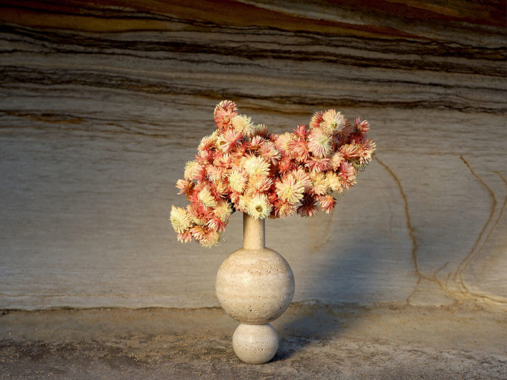

Benjamin Avery - The Colorblind Florist
Benjamin Avery is a Sydney-based florist and colorblind artist who has made significant contributions to the floral industry. His unique perspective on color and design has led to the creation of stunning floral arrangements that challenge traditional notions of beauty. Originally pursuing a career as a lawyer, he pivoted to the floral industry and has not turned back.
Benjamin's work is characterized by his innovative use of textures and shapes, allowing him to create visually striking arrangements that resonate with a wide audience. His passion for floristry and dedication to his craft have earned him recognition in various floral exhibitions and competitions.
In an interview with HIGHSNOBIETY Avery speaks on his experience as a florists who experiences colorblindness,
"When I reached adulthood, I was looking for a medium that was versatile and representative of nature. Something I could weld away that would resemble and speak to the natural world. Floristry isn’t about color to me, it is about creating a surreal environment and transforming and transporting the viewer into another realm. I’m attracted to form and texture before color. Being color blind doesn’t affect me as I’ve never known a difference."
Read the interview here.
Through his art, Benjamin aims to inspire others, especially those with color vision deficiencies, to embrace their unique perspectives and express themselves creatively.
Image rights: Addition Studio